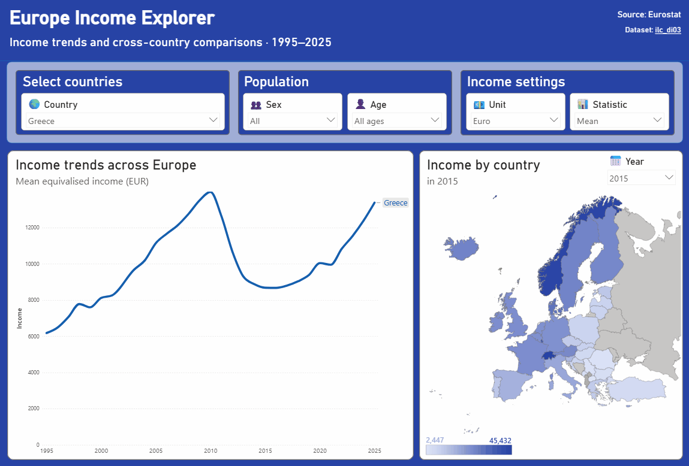

Data engineering · Business intelligence
European income
distribution
A complete path from Eurostat data to a structured model, validated SQL and a Power BI report for comparing income across countries and demographic groups.

01 / The question
How do income patterns differ across Europe?
Eurostat publishes annual mean and median equivalised income statistics across countries and demographic groups. The project makes those measures easier to compare over time, while keeping differences in age, sex and units visible.
02 / The dataset
One source, several ways to compare.
The pipeline uses Eurostat dataset ilc_di03, based on EU Statistics on Income and Living Conditions. It covers annual observations from 1995 to 2025 where available, with values in euros, purchasing power standards and national currency.
03 / The workflow
From extraction to an interactive report.
- 01Extract and transform
Python and Pandas prepare the Eurostat records for analysis.
- 02Model the data
A dimensional star schema organizes income measures alongside country, age, sex, statistic and unit attributes.
- 03Validate with SQL
PostgreSQL supports data checks and exploratory queries against the modeled tables.
- 04Explore in Power BI
Interactive filters and visuals support country comparisons, time trends and a European choropleth map.
04 / The visuals
Explore the interactive report.

05 / Findings & recommendations
A flexible view for comparing like with like.
The project README describes the analysis questions and report features rather than a single published numeric conclusion. The dashboard supports comparison by country, year, age group, sex, income statistic and unit.
Recommended use
Keep the selected statistic and unit consistent when comparing countries. Use purchasing power standards for cross-country comparisons, and review mean alongside median income to see how the typical value differs from the average.